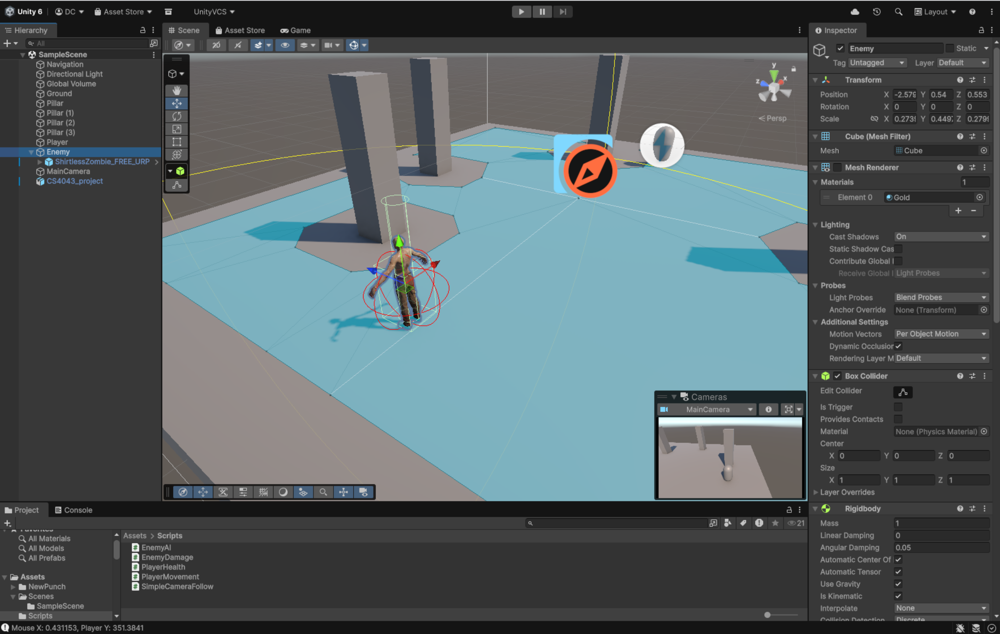
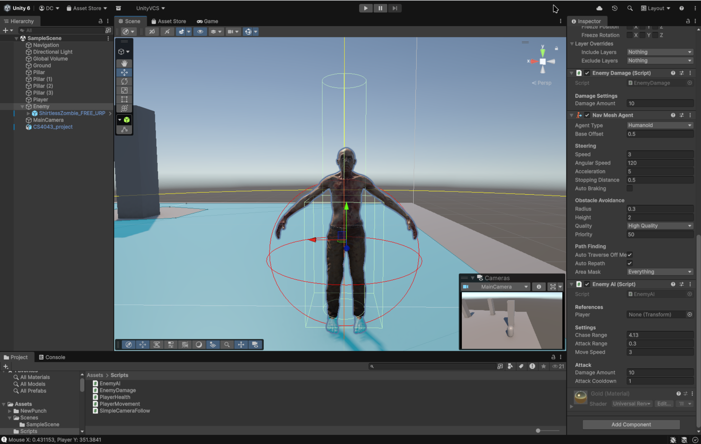

Today I felt was actually quite a productive day. Working further with my zombie AI, I was able to implement a radius that the
zombies would be able to detect the player in to stop them from immediately chasing after the player as soon as you spawned in.
The radius was adjustable AND on top of that I made a radius where the zombie could attack you. Before-hand it was just upon contanct
that you would take damage but this time it was PROPER.

In the above one you can see a big yellow radius that is almost touching the player (capsule). Once the player entered that radius,
the zombie would then start chasing you.

And above this image you can see the zombie has a few boxes and spheres around him. The big red one is the attack radius, which is
adjustable. The smaller yellowish one is basically a guideline for the NavMesh. So that one is essentially a hitbox for the
NavMesh.
On a side note, our artist has completed the presentation for our project. I'm a bit nervous to present it but I'm also fairly
excited too cause we have all put quite a good bit of effort into this project.
Another thing i'd like to mention, which I haven't been updating in these past few entries, is the game sounds that our
sound engineer has been cooking up. He's made main menu music (in entry #2), he's been tweaking our zombie sounds that
we recorded LIVE, he's made some sounds effects and background noise, a litte bit of everything. Below are some of the things
he's been working on: